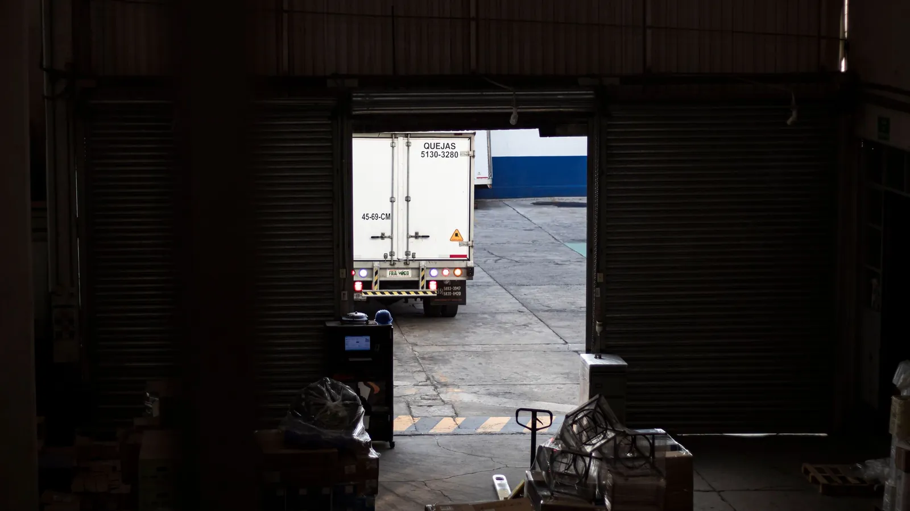

The big ERP vendors sell their agents as the reason to migrate. The questions your customers ask about orders and invoices don't have to wait for that project to finish.

TechRadar ran a piece arguing that agentic AI from the big ERP vendors comes with a condition attached. SAP's version, which it calls the autonomous enterprise, puts more than 200 specialized agents behind its Joule assistant, and the full set is reserved for cloud subscribers. Oracle's agents run only inside Fusion Cloud, so a company still on E-Business Suite has to move before it gets any of them. Customers on older on-premises releases get a reduced version or nothing.
The article's complaint is about sequencing. The agent is sold as the reason to modernize, and the migration is the price of entry. Both projects end up drawing on the same budget, and the vendor's roadmap sets the date. Its suggested way out is third-party support for the ERP you already run, which removes the forced deadline and frees money for AI you pick on its own merits.
An ERP migration is measured in years, and its cost is a board conversation. If agentic AI gets filed under that project, every customer-facing improvement that depends on ERP data waits with it. A large share of what customers ask is ERP data. Where is my order, when does it ship, can I get a copy of that invoice, why was I charged twice. Those calls and emails reach your support team today, and the answer sits in a system that is not going anywhere for at least two more budget cycles.
Treating the two as one decision puts your service team on a finance-systems timetable. It also weakens your position in the migration itself. If the agent features are why you are moving, you have told the vendor you will accept their date.
So separate them. The back-office agents SAP and Oracle are building, the ones that post journals and reconcile accounts, probably do belong inside the platform. The agent that answers a customer about an order doesn't need to live there. It needs to read the ERP, and almost every ERP already allows that.
CX-Builder runs on your own server outside any ERP and treats the system of record as a source to read from. Most ERPs, old ones included, expose order and invoice data somehow: an API, a reporting database, a scheduled export. An agent built in CX-Builder calls that source as a tool and answers in your wording. Whatever it can't settle goes to a person with the record already attached.
When the migration does happen, on a date you chose, you change what the tool points at. The conversation design, the escalation rules and the approval steps stay as they were, and the customer never sees the back end move.
Keep the first version read-only. Looking up an order carries little risk. Issuing a credit note does not, so anything that writes back to the ERP goes through a human approval step until you have reason to trust it.
One agentflow with a few tools. The main one is a custom tool that queries a read-only view or API over orders, shipments and invoices, scoped to the customer's verified account. Next to it, a document store holds what the ERP doesn't: shipping terms, the returns policy, payment terms, all loaded into a vector store for retrieval. A human-in-the-loop step holds any requested change, such as a new delivery address or a disputed charge, until a person approves it.
When the new ERP arrives, the builder repoints the tool and replays the same test conversations against it. If the answers match, the cutover is done as far as customers are concerned.
Pull last quarter's support contacts and tag the ones whose answer lives in the ERP. If that share is large, put a read-only agent in front of the ERP you run now, and make the migration decision on its own costs and its own date.